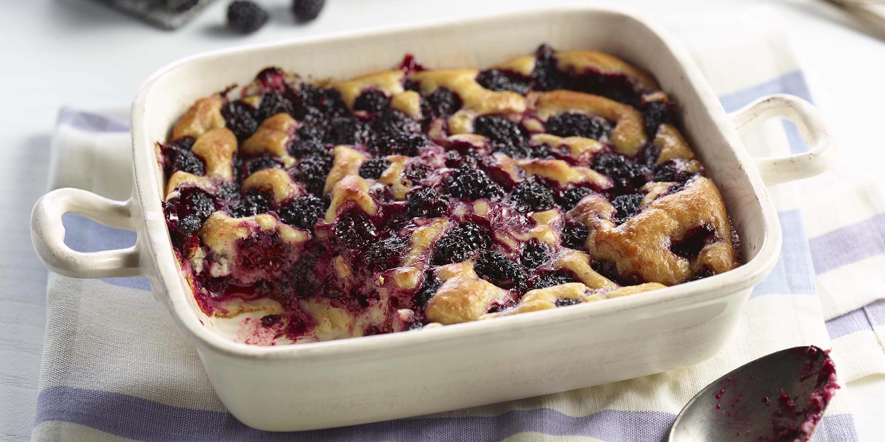

Blackberry Cobbler
There's nothing quite like it.
175 HEALTH
78 ENERGY

Ingredients
- 1/2 stick butter, melted, plus more for greasing pan
- 1 1/4 cups plus 2 tablespoons sugar
- 1 cup self-rising flour
- 1 cup whole milk
- 2 cups fresh (or frozen) blackberries
- Whipped cream and/or ice cream, for serving
Process
- Preheat Oven. Preheat the oven to 350 degrees F. Grease a 3-quart baking dish with butter.
- Combine Ingredients. In a medium bowl, whisk 1 cup sugar with the flour and milk. Whisk in the melted butter.
- Add berries. Rinse the blackberries and pat them dry. Pour the batter into the baking dish. Sprinkle the blackberries evenly over the top of the batter. Sprinkle 1/4 cup sugar over the blackberries.
- Bake. Bake until golden brown and bubbly, about 1 hour. When 10 minutes of the cooking time remains, sprinkle the remaining 2 tablespoons sugar over the top. Top with whipped cream or ice cream . . . or both!
Notes: Serves four.
Source